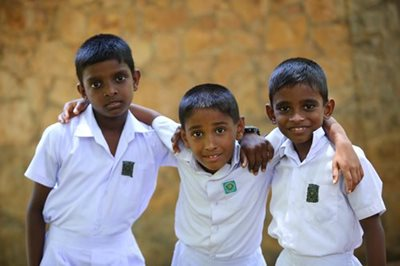
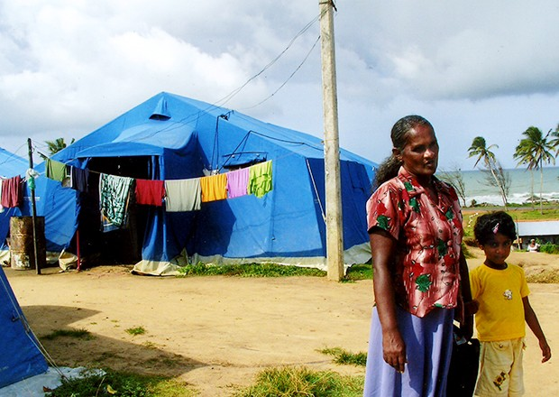

PURCHASE
Purchase some of the favourite things rated by our visitors

Traditional Sri Lankan Pot

Traditional Mask

Kithul Wooden Mug

Bathik Frock

Wood Crafted Elephant
Below are some of the online shops that you can purchase unique, Sri Lankan made material !
Sri Lanka Antiques
Sri Lanka Antiques was established to serve high quality product, and value-based prices for Sri Lanka based customers. At Andy's Furniture Sri Lanka we have a long history of great product being delivered with great service. Andy's is just another proof of our commitment to quality service and product. We have two warehouses in Colombo, we are just a day's delivery from any City.
Our warehouses has a full sampling of all of Andy's Furniture Sri Lanka's best selling Viyan beds, Premium wooden Almirahs, Perfectly repaired antique Dutch Boxes, , Antique Couch type Sofas. The focus is on selection, and value. Andy's Furniture Sri Lanka is intent on making a product done by premium quality wood that lasts for generations. The wood and product selection have been specially designed to keep the primuim qulity of the product. Each piece has a specific value range that makes it easy to select.
You can access our site by clicking here
Lankpura LLC
Lankpura LLC is a website that is dedicated to Sri Lankan specialities. You can access many departments related with sri lanka by this website. It includes,
- Aryuvedic Material
- Herbs and Spices
- Sri Lankan Fashion
- Grocery
- Tea varieties
- Activities
and many more. You can access the website by simply clicking here
DONATE
Help A Child In Need

SOS Children’s Villages Sri Lanka is an approved charitable organization under the section 31 (09) (a) of the Inland Revenue Act No. 28 of 1979 Sri Lanka.
Your donation helps orphaned and abandoned children
Your donation will be used to provide a loving home, education and quality care.
We will send regular communication to you on our work.
Sri Lanka Red Cross Society

After assisting the people of Sri Lanka who were battered by the 2004 tsunami, we have now embarked upon a new quest to help the people who were victims of the 30 year old conflict. Our aim is to help them to rebuild their lives and livelihood and to strengthen them to be a strong contributor to the Sri Lankan economy. One of the best ways you can make a different in the lives of these people is to make a financial donation to our work.
You may make a donation by clicking on this link.
You may also choose to donate to one of our other core programmes, or to make a general “un-earmarked” donation. These donations essential to enable us to help people in desperate need, but for whom it can be difficult to raise funds as their plight is no longer in the news.
The Sri Lanka Red Cross Society is not a government agency, but depends on donations to carry out its work. What’s more, the value of contributions is increased by the fact that the Society has a huge volunteer network, with 355 volunteers for every paid member of staff.